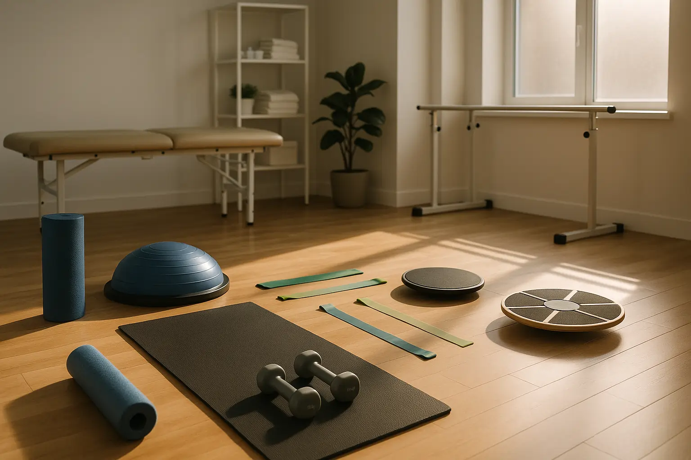

Can Exercise Really Slow Parkinson's? Yes. Here's How


25
Oct
Apricot Care
Parkinson's disease slowly damages the brain cells that make dopamine, a chemical that helps control movement and mood. Exercise increases dopamine availability in the brain and creates new neural pathways, potentially slowing disease progression by 3 to 5 points annually on clinical rating scales.
What Makes Parkinson's So Challenging
Parkinson's disease affects roughly one million people in the United States. The condition develops when dopamine-producing neurons in an area called the substantia nigra start to die. Without dopamine, the brain struggles to send movement signals effectively. People with Parkinson's experience tremors, stiffness, slow movement, and balance problems that make daily life increasingly difficult.
The disease progresses differently for each person. Some people notice symptoms slowly over many years. Others see changes happen faster. Currently, medications help manage symptoms but do not stop the disease from advancing.
Here at Apricot Care Assisted Living and Rehabilitation, we understand this struggle. We work with individuals facing Parkinson's every day. We have seen firsthand how the right approach to care changes lives. That approach includes movement and structured exercise as core pillars of treatment.
The Science Behind Exercise and Parkinson's
Recent Breakthroughs Show Real Results
The research landscape has shifted dramatically in the past two years. Scientists now have proof that exercise does not just help you feel better. It actually changes what happens inside your brain.
In October 2025, researchers completed the CYCLE-II trial with 256 patients. Participants who did 12 months of high-intensity cycling showed a 3.7-point lower rate of motor symptom progression compared to those receiving standard care. Think about that number. It means exercise delivered disease-modifying benefits similar to pharmaceutical interventions.
Why does this matter? Without intervention, people with Parkinson's typically experience a decline of 5 to 9 points annually on motor rating scales. Exercise cut that decline by more than one third.
A Yale University study from 2024 showed something even more striking. Patients who engaged in high-intensity exercise showed an increase in dopamine transporter availability of 90 percent within six months. The dopamine-producing neurons remaining in the brain became healthier and worked more effectively.
How Exercise Changes Your Brain
Exercise works through multiple pathways simultaneously. Understanding these pathways helps explain why movement matters so much.
The Dopamine System Gets Stronger
When you exercise, your brain releases more dopamine. This happens despite the ongoing loss of dopamine-producing neurons. Exercise also changes how the brain handles dopamine. Specifically, it downregulates the dopamine transporter protein. This means dopamine stays active in your brain longer. The neurons still alive produce stronger, more effective dopamine signals.
BDNF: The Brain's Growth Factor
Your brain creates a substance called brain-derived neurotrophic factor, or BDNF. Think of BDNF as fertilizer for your brain. It helps neurons grow, connect, and repair damage. Exercise triggers BDNF release. Higher BDNF levels enable your brain to create new pathways around areas damaged by Parkinson's.
Research analyzed five separate trials involving 216 patients. The results showed significant BDNF improvement with exercise compared to no exercise. Patients with higher BDNF levels showed better motor function scores.
The Lactate-BDNF Connection
Here is something many people do not know. When you exercise at high intensity, your muscles produce lactate. Your brain reads this lactate as a signal. That signal triggers BDNF release. This explains why moderate exercise produces fewer brain-protective benefits than high-intensity exercise.
Your Cells Get Protected
Exercise improves how your mitochondria function. Mitochondria are the power plants inside your cells. They generate energy. Parkinson's damages mitochondrial function. Exercise reverses some of this damage.
Exercise also reduces oxidative stress and brain inflammation. Both of these problems accelerate Parkinson's progression. Exercise activates antioxidant enzymes that naturally protect your brain.
The Right Exercise Prescription Matters
Why Intensity Levels Make a Huge Difference
Not all exercise produces the same results. The intensity of your workout determines whether you get disease-modifying benefits or just feel better temporarily.
High-intensity exercise at 80 to 85 percent of your maximum heart rate creates the brain changes we described. This intensity level triggers dopamine system changes, BDNF release, and cellular protection.
Moderate-intensity exercise at 60 to 65 percent of your maximum heart rate helps you stay fit. However, it does not produce the same disease-slowing benefits. One clinical trial directly compared high-intensity versus moderate-intensity approaches. The high-intensity group showed motor score improvement. The moderate-intensity group did not meet the threshold for meaningful improvement.
This finding changes how we think about exercise recommendations. Telling someone with Parkinson's to just stay active is not enough guidance. The intensity must reach high levels to trigger the protective brain mechanisms.
The Exercise Prescription That Works
Based on clinical trial evidence, here is what actually slows Parkinson's progression.
High-Intensity Aerobic Exercise
- Heart rate zone: 80 to 85 percent of maximum
- Frequency: 3 to 4 days per week
- Duration: 30 to 45 minutes per session
- Best options: Stationary cycling or treadmill walking
- Expected outcome: Approximately 3.7-point reduction in annual progression
Supporting Exercises
- Strength training: 2 to 3 days weekly at 60 percent of your maximum weight
- Balance work: Tai chi, yoga, or boxing 2 to 3 times weekly
- Flexibility: Daily stretching routines
Total weekly commitment: 2.5 or more hours minimum for meaningful quality of life improvements
Different Exercises Deliver Different Benefits
Aerobic Exercise (Cycling, Walking, Running)
Aerobic work improves walking speed, reduces stiffness, and increases dopamine. Clinical trials show consistent benefits for motor symptoms. The CYCLE-II trial specifically examined cycling. Participants using stationary bikes showed sustained improvements in gait and movement control.
Tai Chi and Balance Training
Tai chi produces dramatic balance improvements. One Harvard study found that regular tai chi practitioners showed balance that was four times better than those who did stretching alone. Balance improves fall risk. Falls cause serious injuries in Parkinson's patients. Over a 3.5-year period, tai chi practitioners showed slower overall symptom deterioration compared to sedentary controls.
Dance
This might surprise you, but dance creates remarkable outcomes. A three-year study followed 32 people with Parkinson's who participated in dance classes. These dancers showed zero motor decline over the three-year period. The expected decline over that same timeframe is 5 to 9 points annually. Dance combines aerobic exercise, balance training, cognitive engagement, and social connection. All these elements work together.
Strength Training
Resistance training maintains muscle mass. Parkinson's causes people to lose muscle. Strength work preserves function for daily activities. It also reduces fall risk by maintaining power in the legs and core.
Virtual Reality Training
The newest research from 2025 found that virtual reality training produces the best gains for cognitive function and processing speed. As Parkinson's progresses, it affects thinking abilities, not just movement. Virtual reality training addresses both.
Beyond Movement: The Non-Motor Benefits
Cognitive Improvement
Exercise strengthens thinking. Patients show better processing speed, improved memory, and sharper executive function. These gains appear within weeks of starting consistent exercise.
Mood and Emotional Benefits
Parkinson's often brings depression and anxiety. Exercise reduces both. A 2025 analysis found that dance produced the strongest anti-depression effects compared to other exercise types.
Sleep Quality
People with Parkinson's often struggle with sleep. Regular exercise improves both sleep duration and sleep quality. Better sleep then helps all other symptoms improve.
Overall Quality of Life
Studies measuring quality of life show statistically significant improvements across multiple life domains. People sleep better, move better, think more clearly, and feel less depressed.
Early Intervention Changes Everything
Why Starting Exercise Immediately Matters
The stage of disease at which someone begins exercise affects the outcome. People diagnosed with early-stage Parkinson's who start exercise immediately show better long-term results than those who wait.
This finding suggests that exercise works best as a preventive strategy. Starting early, before significant brain changes occur, allows exercise to protect remaining dopamine neurons more effectively.
At Apricot Care's neuro rehabilitation centre in Pune, we emphasize immediate engagement with structured exercise. We do not wait. The moment someone receives a Parkinson's diagnosis, we begin developing an individualized exercise program.
Specialized Care for Parkinson's Disease Patients in Pune
Why Professional Guidance Makes a Difference
Parkinson's exercise looks simple on paper. In practice, many details matter. Heart rate monitoring ensures you stay in the effective 80 to 85 percent zone. Progression guidelines prevent injury while building capacity. Safety modifications protect those with balance issues or other complications.
This is why working with trained professionals produces better outcomes than exercising alone.
At Apricot Care Assisted Living and Rehabilitation, our team understands Parkinson's. Our specialists include physical therapists trained in neurological conditions. We know how to adapt exercises for different disease stages. We monitor progress using the same clinical scales that research studies use.
Our neuro rehabilitation centre in Pune serves patients ranging from early-stage to advanced Parkinson's. We create individualized programs. We provide motivation through group classes. We measure outcomes to ensure you are making progress.
The Apricot Care Difference
We combine evidence-based exercise with comprehensive care. Our approach includes medication management consultation, nutrition guidance, cognitive engagement, and emotional support. We understand that Parkinson's affects the whole person.
We offer virtual coaching for those who prefer training from home. We maintain 93 percent adherence rates because our programs work and feel sustainable.
Getting Started: Your First Steps
Step One: Medical Evaluation
Before starting any new exercise program, discuss it with your neurologist. Mention the specific high-intensity approach. Ask about any modifications needed based on your current symptoms and other health conditions.
Step Two: Determine Your Maximum Heart Rate
A simple formula estimates your maximum heart rate. Subtract your age from 220. Your target zone (80 to 85 percent) is that number multiplied by 0.80 and 0.85.
For example, a 70-year-old has a maximum heart rate of 150. The target zone is 120 to 128 beats per minute.
Step Three: Choose Your Primary Exercise
Stationary cycling and treadmill walking have the strongest research support. Pick the option you find most tolerable. Sustainability matters more than perfection.
Step Four: Start Gradually
Your body needs adaptation time. Begin with lower intensity and shorter duration. Build gradually over weeks. This approach prevents injury and builds confidence.
Step Five: Add Variety
Once aerobic exercise becomes routine, add balance training and strength work. Variety keeps exercise interesting and addresses different symptom areas.
Key Takeaways: What You Need to Know
Exercise is not optional for Parkinson's management. The evidence shows that movement actually slows disease progression through multiple brain mechanisms. High-intensity exercise at 80 to 85 percent of maximum heart rate delivers the strongest benefits.
This is not about feeling better, though that happens. This is about changing what occurs inside your brain at the cellular level. The research proves it works.
Starting early matters. Working with trained professionals ensures safety and proper progression. Combining different exercise types addresses multiple symptom areas.
At Apricot Care's specialized care for Parkinson's disease patients in Pune, we help individuals implement these evidence-based approaches. Our neuro rehabilitation centre in Pune has helped hundreds of people slow their disease progression through structured exercise and comprehensive care.
You do not have to accept Parkinson's progression as inevitable. With the right approach, you can fight back.
Ready to take control of your Parkinson's management? Contact Apricot Care Assisted Living and Rehabilitation today. Our specialists will evaluate your current condition and create an individualized exercise program based on the latest research. Call us or visit our website to schedule your consultation. Your brain is worth the effort.
Common Questions About Exercise and Parkinson's
Q: Is exercise safe with Parkinson's?
A: Yes, when done properly with appropriate modifications. Work with trained professionals to ensure safety. Starting gradually reduces injury risk.
Q: Do I need a gym membership?
A: No. Stationary cycling and walking work at home. Many balance exercises require no equipment. Virtual coaching can happen anywhere.
Q: How long before I notice benefits?
A: Quality of life improvements appear within weeks. Motor progression slowing becomes apparent over months. Brain imaging changes show within 6 months.
Q: Can I exercise if I am on Parkinson's medications?
A: Yes. Exercise and medication work together. Always inform your doctor about your exercise plan.
Q: What if I miss some sessions?
A: Consistency matters, but occasional missed sessions do not erase benefits. Return to your routine. Long-term consistency produces the results shown in research trials.